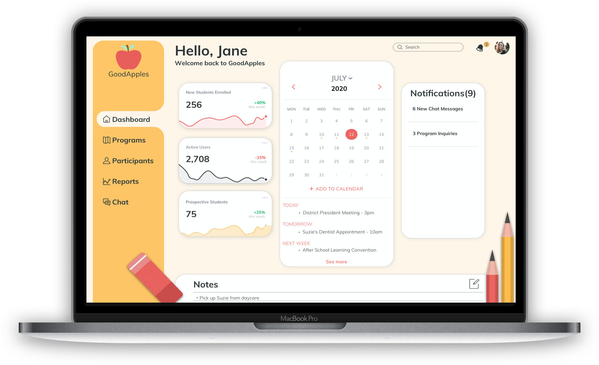
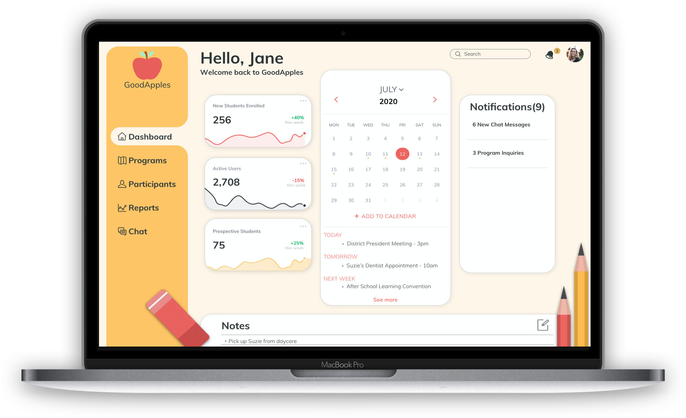

After-School Administration Tool
Tools Used
Sketch
Figma
Photoshop
Principle
Invision
Date
May 2020 -
July 2020
Team
Logan Peters, UI
Malcom Fry, UI
Project Goal
After-school administrators do not have an efficient platform to run their programs. I was challenged to create an organized and approachable web platform for educators from many backgrounds to build programs, take attendance, and schedule activities for their students.
Research & Synthesis
The UX team and I combined our research which included: personas, competitive analysis, low-fidelity wireframes, visual competitive analysis, client meetings, and user testing. This helped us setup design principles to follow while building this platform. This platform was built for teachers and administrators and we wanted to make sure that all design decisions were made with them in mind. We consulted with 12 teachers of many different backgrounds throughout this project to make sure we were making the right design decisions.

Competitive analysis synthesized with examples*
Affinity Mapping
As a team, we took all research and began affinity mapping. We broke down what worked, what did not work, and dove into what the user might need based on our research. With our research, we found that the user visually was looking for a platform that included the following: a minimal, organized design, headings and copy large enough for all demographics to read, and a light/bright color palette.

Design Principles
From the research, we defined five design principles to follow
throughout designing this project:
- Functionality first
- Familiarity = Ease of functionality and encourages the use
- Set information in a logical order
- Less is more
- Maintain a consistent design throughout
Design Solutions: Mood Boards
I took all previous research and began my design process. Using our design principles: less is more and creating a sense of familiarity, I drew on familiar education elements or things we remember from school. When testing these mood boards with our users, it was the simple and familiar elements that drew the educators in. Ultimately, we took the design direction of the first mood board seen below.


Design Solutions: Style Tiles
From mood boards, I then took those designs and created the style tiles to create a sense of what the platforms could look like and further tested these with our users. Similar to the mood boards, I found that the users gravitated towards the first style tile due to its familiarity, ease of use, organization, and taking advantage of the white space giving it an overall better feel for the user.


Design Solutions: High Fidelity
After conducting the user interviews and testing, I then had the direction to create the high fidelity designs. From the testing, I decided to follow the design direction that provided the most functionality and drove the ease of use while providing a less-is-more platform that was organized. I made sure to keep elements of familiarity as well to create a fun, whimsical feel for the user. This was a decision that was driven by the users’ feedback.


Design Systems
Once arriving at the final iterations, we built a comprehensive design system to help with all future builds and assist the development team. This included everything from color palettes to logo and all UI elements.


What I learned
In this design-build, I learned a lot about accessibility and making sure I tested a wide-range of individuals. In education, there is a large age range in administrators and teachers and I needed to make sure the platform was useable by all users. Accessibility is a very important concept in design and something that should be considered in all projects.